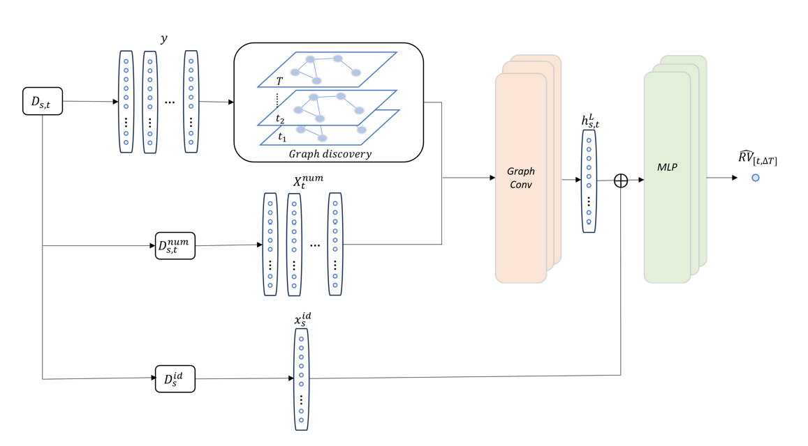

Realized Volatility Prediction and Graph Data Mining
The deep learning architecture in our model
Graph Neural Networks (GNNs) have emerged as a powerful tool, demonstrating promise across various applications, including recommendation systems, fraud detection, and community detection in social networks. However, in certain areas, such as the domain of financial market studies, though GNNs have attracted substantial attention and research, there is a challenge of insufficient appropriate graphs that presents an obstacle to the effective application of GNNs.
We introduce a novel approach that combines graph discovery techniques with GNN models to enhance the identification of interconnections within financial markets. This method aims to address the issue of inadequate suitable graphs by leveraging data to uncover the latent graph, thereby tailoring node embeddings to specific tasks. Furthermore, employing graph discovery models eliminates the requirement for expertise in a field to generate graphs, saving both time and effort that would otherwise be spent on manual graph creation.
We experimented with three graph discovery methods on [Kaggle Optiver Realize Volatility Prediciton] dataset.
- The first is to threshold the covariance matrix. This is the most intuitive method.
- The second is to use the widely popular algorithm Graph-lasso (Glasso) to estimate the underlying precision matrix of the underlying data distribution. For more detals, see [here].
- The third one is to impose a Laplacian constraint, i.e., assume the precision matrix of the underlying distribution of data is “given” by the Laplacian matrix of a graph. The Laplacian matrix naturally occurs in GNNs model setups and motivations and is of special interest if combining graph discovery with GNNs. For more details, see [here].
The following shows the graphs discovered by the Laplacian constrained method, covariance thresholding method, and Glasso method individually.
Graph discovered by the Laplacian constrained method.
Graph discovered by the covariance thresholding method.
Graph discovered by the Glasso method.
We find that precision-based graph discovery methods significantly enhance GNNs accuracy, at a minimum of 15% compared to benchmark LightGBM and Neural Net models, by generating meaningful graphs and node embeddings. In contrast, conventional covariance-based methods lack this effectiveness due to their consideration of indirect influences, leading to suboptimal graph structures. Our analyses from a graph theory perspective demonstrate that the precision-based Glasso graph discovery method produces the most efficient network structure.
Please [contact me] for a preprint or more details. For a sample code, click [here]